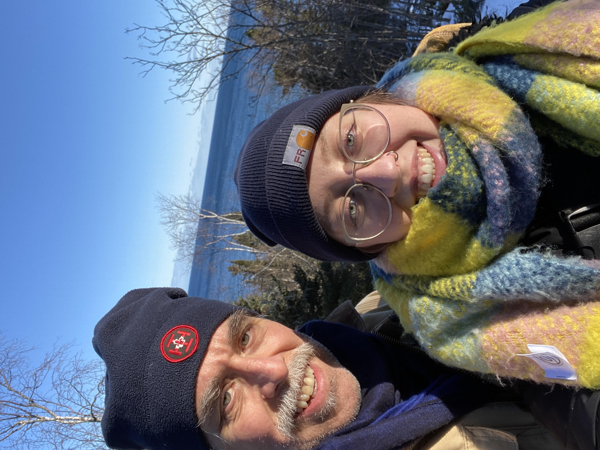
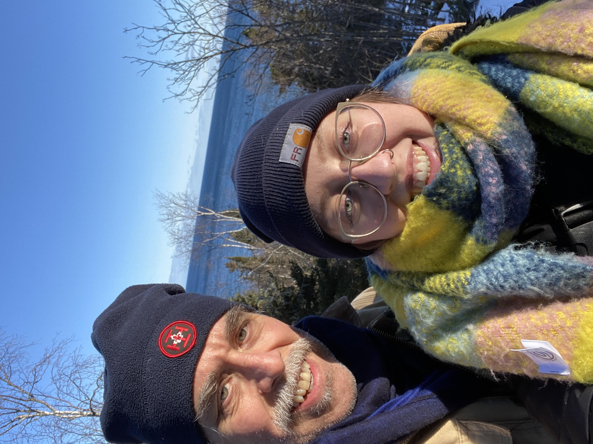

Nature, the outdoors, mean a lot of things for a lot of people. No one experience is the same, and often I don’t take the time to name or consciously consider these feelings. Mostly I just like the sun on my face, the smell of the leaves, the interesting fungi, the off-chance that it might rain, the reminder that I need to reapply bug spray. The little, manageable, non-cosmic things. These are important too. So are other people’s reasons – learning how to snowshoe, doing research on prairie grasses, an excuse to get away from family, a need to work through a problem in your head, a search for inspiration.
Whatever brings people to the trail, they’re sharing an experience all the same – they are there, and more often than not, they choose to be. Whether it’s in search of exercise, joy, alone time, poetry, or soil samples, they are seeking some form of experience; an answer, a release, a feeling.
Wouldn’t it be a beautiful world in which we could all come together in this way?